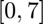
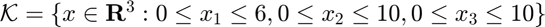
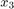
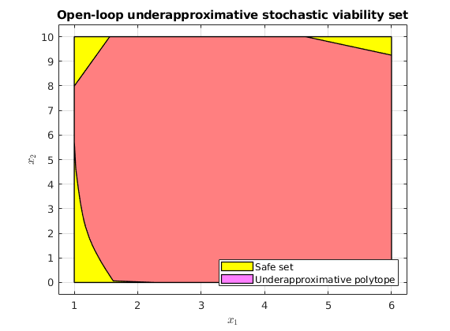
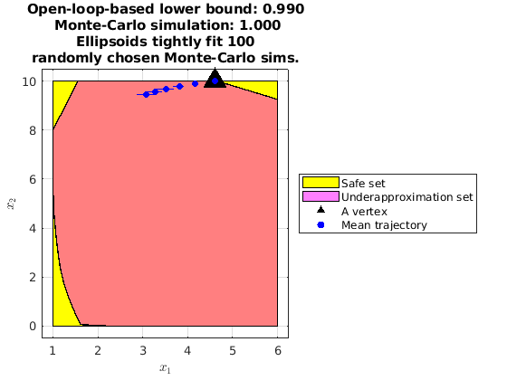

Contents
Underapproximative verification of an automated anesthesia delivery system
This example will demonstrate the use of SReachTools for controller synthesis and verification of a stochastic continuous-state discrete-time linear time-invariant (LTI) systems. This example script is part of the SReachTools toolbox, which is licensed under GPL v3 or (at your option) any later version. A copy of this license is given in https://github.com/unm-hscl/SReachTools/blob/master/LICENSE.
In this example script, we discuss how to use SReachSet to synthesize open-loop controllers and verification for the problem of stochastic reachability of a target tube. Here, by verification, we wish to characterize a set of safe initial states with probabilistic safety above a threshold. We consider the verification of an automated anesthesia delivery model.
Automated anesthesia delivery systems have the potential to significantly reduce medical operation costs by allowing a single human-anestheologist to monitor multiple operations and delegate the low-level regulation of the patient's sedation level to the automation. Naturally, this system is safety critical, and we wish to ascertain the set of initial states (patient sedation levels) from which the automated anesthesia delivery system can continue to maintain within pre-specified safe bounds. If the patient sedation levels go outside these bounds, the patient may suffer from serious health consequences. This problem has been characterized as a benchmark problem in Abate et. al, ARCH 2018 paper (https://doi.org/10.29007/7ks7). To obtain a LTI system description, we consider Problem 2.1.1 with no anestheologist-in-the-loop, but an additive Gaussian disturbance to model the human patients. This script improves upon the Figures 6 and 7 of Abate et. al, ARCH 2018 paper (https://doi.org/10.29007/7ks7).
All computations were performed using MATLAB on an Intel Xeon CPU with 3.7GHz clock rate and 16 GB RAM.
% Prescript running: Initializing srtinit, if it already hasn't been initialized close all;clearvars;srtinit;
Problem Formulation
We first define a LtiSystem object corresponding to the discrete-time approximation of the three-compartment pharmacokinetic system model.
We bound the anesthesia the automation can deliver to  mg/dL and account for patient model mismatch via an additive Gaussian noise.
% System matrices: State matrix and input matrix % ---------------------------------------------- systemMatrix = [0.8192, 0.03412, 0.01265; 0.01646, 0.9822, 0.0001; 0.0009, 0.00002, 0.9989]; inputMatrix = [0.01883; 0.0002; 0.00001]; % Input bounds % ------------ auto_input_max = 7; % Process disturbance with a specified mean and variance % ------------------------------------------------------ dist_mean = 0; dist_var = 5; process_disturbance = RandomVector('Gaussian',dist_mean, dist_var); % LtiSystem definition sys = LtiSystem('StateMatrix', systemMatrix, ... 'InputMatrix', inputMatrix, ... 'DisturbanceMatrix', inputMatrix, ... 'InputSpace', Polyhedron('lb', 0, 'ub', auto_input_max), ... 'Disturbance', process_disturbance); disp(sys)
Linear time invariant system with 3 states, 1 inputs, and 1 disturbances.
Safety specifications
We desire that the state remains inside a set .
time_horizon = 10; safe_set = Polyhedron('lb',[1, 0, 0], 'ub', [6, 10, 10]); safety_tube = Tube('viability',safe_set, time_horizon);
Computation of the underapproximation of the stochastic viability set
We are interested in computing the stochastic viability set at probability 0.99.
For using SReachSet with chance-open option, we need a set of direction vectors and an affine hull (n-2 dimensional) intersecting the initial state. Since  of the dynamics is slow, we fix it  and analyze the rest of the system.
and analyze the rest of the system.
% Safety probability threshold of interest % ---------------------------------------- prob_thresh = 0.99; % Stochastic reach-avoid 'level' of interest % Definition of the affine hull % ----------------------------- x3_initial_state = 5; init_safe_set_affine = Polyhedron('He',[0, 0, 1, x3_initial_state]); % Definition of set of direction vectors % -------------------------------------- no_of_dir_vecs = 32; theta_vec = linspace(0,2*pi, no_of_dir_vecs+1); theta_vec = theta_vec(1:end-1); set_of_dir_vecs = [cos(theta_vec);sin(theta_vec);zeros(1,no_of_dir_vecs)]; % Use SReachSet to compute the underapproximative set % --------------------------------------------------- % Use Ctrl + F1 to get the hints options = SReachSetOptions('term','chance-open', 'verbose', 1, ... 'set_of_dir_vecs', set_of_dir_vecs, ... 'init_safe_set_affine', init_safe_set_affine); timer_val = tic; [underapprox_stoch_viab_polytope, extra_info] = SReachSet('term', ... 'chance-open', sys, prob_thresh, safety_tube, options); elapsed_time = toc(timer_val);
Warning: Sanitized covariance matrix since negative eigenvalues > -2*eps and <0 found! New covariance matrix has all the eigenvalues below 1e-10 set to 0. Warning: A non-empty cvx problem already exists in this scope. It is being overwritten. Maximum reach probability: 1.00 Computing the polytope via a maximally safe initial state Analyzing direction : 32/ 32 Computing the polytope via the Chebyshev center Analyzing direction : 32/ 32
Plotting the stochastic viable set
figure(1); hold on; safe_set_2D = safe_set.intersect(init_safe_set_affine); plot(safe_set_2D, 'color', 'y'); plot(underapprox_stoch_viab_polytope, 'color', 'm', 'alpha', 0.5); leg=legend({'Safe set','Underapproximative polytope'}); set(leg,'Location','SouthEast'); xlabel('$x_1$','interpreter','latex') ylabel('$x_2$','interpreter','latex') box on; grid on; view([0,90]); title('Open-loop underapproximative stochastic viability set'); % If code ocean, save the results % saveas(gcf, '../results/Anesthesia_StochasticViabilitySet.png');
Validate the underapproximative set and the controller using Monte-Carlo
We will now check how the optimal policy computed for one of the corners perform in Monte-Carlo simulations.
Note that we fail to obtain tight bounding ellipsoids in the initial time steps due to lack of spread in the trajectory.
n_mcarlo_sims = 1e5; % How many Monte-Carlo simulations to use vertex_indx = 8; % Index of the vertex corner of interest if ~isEmptySet(underapprox_stoch_viab_polytope) % Obtain info about the vertices from extra_info struct given by SReachSet % ------------------------------------------------------------------------ initial_state = extra_info(1).vertices_underapprox_polytope(:,vertex_indx); opt_input_vec = extra_info(1).opt_input_vec_at_vertices(:,vertex_indx); stoch_viab_prob_lb = extra_info(1).opt_reach_prob_i(vertex_indx); % Optimal mean trajectory generation % ---------------------------------- [Z, H, G] = sys.getConcatMats(time_horizon); W = sys.dist.concat(time_horizon); optimal_X = (Z * initial_state + H * opt_input_vec) + G * W; optimal_mean_X = reshape(optimal_X.mean(), sys.state_dim,[]); % Monte-Carlo estimate of the safety probability % ---------------------------------------------- concat_state_realization = generateMonteCarloSims(n_mcarlo_sims, sys, ... initial_state, time_horizon, opt_input_vec); mcarlo_result = safety_tube.contains(concat_state_realization); stoch_viab_prob_mc_estim = sum(mcarlo_result)/n_mcarlo_sims; % Plotting % -------- figure(2); hold on; % Plot the safe set at the fixed x_3 plot(safe_set_2D.slice(3,x3_initial_state), 'color', 'y'); % Plot the underapproximation of the stochastic reach set at the fixed x_3 plot(underapprox_stoch_viab_polytope.slice(3,x3_initial_state), ... 'color','m','alpha',0.5); % Plot the initial state (vertex) under test scatter(initial_state(1),initial_state(2), 300,'k^','filled'); % Plot the optimal mean trajectory from the initial state (vertex) under % test scatter([initial_state(1), optimal_mean_X(1,:)], ... [initial_state(2), optimal_mean_X(2,:)], ... 30, 'bo', 'filled'); legend_cell = {'Safe set', 'Underapproximation set', 'A vertex', ... 'Mean trajectory'}; leg = legend(legend_cell,'Location','EastOutside'); % Plot ellipsoids that tightly cover 100 randomly chosen realizations ellipsoidsFromMonteCarloSims(concat_state_realization, sys.state_dim, ... [1,2], {'b'}); title(sprintf(['Open-loop-based lower bound: %1.3f\n Monte-Carlo ', ... 'simulation: %1.3f\nEllipsoids tightly fit 100\n',... 'randomly chosen Monte-Carlo sims.'], stoch_viab_prob_lb, ... stoch_viab_prob_mc_estim)); box on; grid on; xlabel('$x_1$','interpreter','latex') ylabel('$x_2$','interpreter','latex'); end % If code ocean, save the results % saveas(gcf, '../results/Anesthesia_StochasticViabControlDemo.png'); % Display the results % ------------------- fprintf('\n\nTime taken for the reach set computation: %1.2f\n', elapsed_time) fprintf(['Open-loop-based lower bound and Monte-Carlo ', ... 'simulation (%1.0e particles): %1.3f, %1.3f\n\n\n'], ... n_mcarlo_sims, stoch_viab_prob_lb, stoch_viab_prob_mc_estim);
Warning: Sanitized covariance matrix since negative eigenvalues > -2*eps and <0 found! New covariance matrix has all the eigenvalues below 1e-10 set to 0. Warning: Sanitized covariance matrix since negative eigenvalues > -2*eps and <0 found! New covariance matrix has all the eigenvalues below 1e-10 set to 0. Warning: CVX failed to obtain the ellipsoid at 1, potentially due to numerical issues. Warning: CVX failed to obtain the ellipsoid at 2, potentially due to numerical issues. Time taken for the reach set computation: 23.86 Open-loop-based lower bound and Monte-Carlo simulation (1e+05 particles): 0.990, 1.000